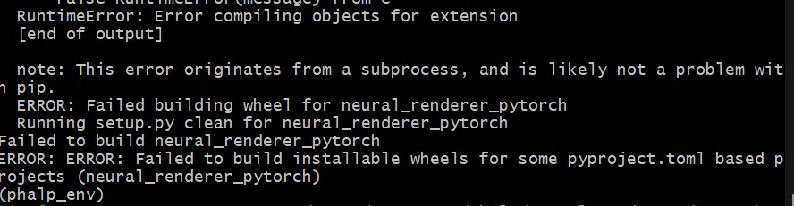
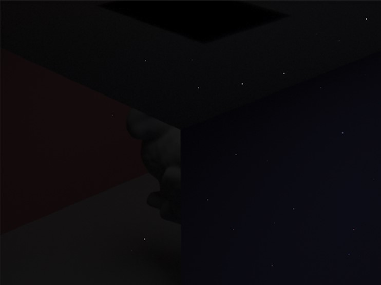
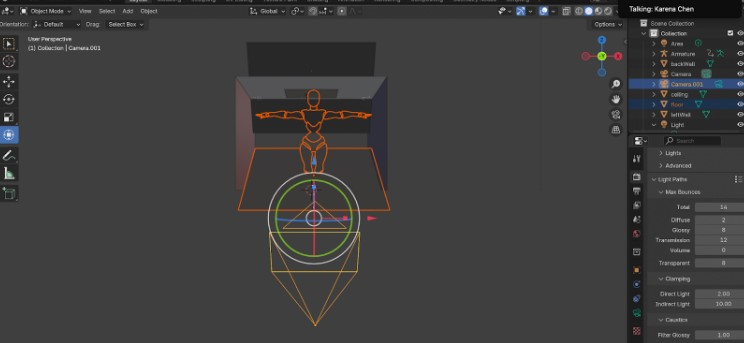
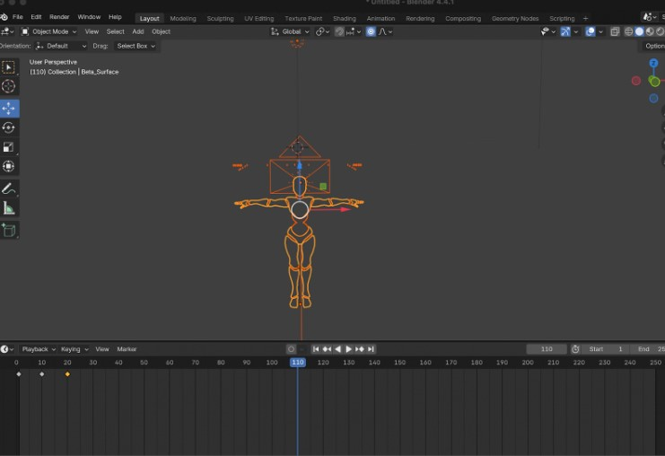

CS184/284A Spring 2025 Final Project Writeup
Title: Animated DancingTeam Members: Cynthia Chen, Karena Chen, Julia Dashzeveg, Steffi Lin
Link to webpage: https://cal-cs184-student.github.io/hw-webpages-karena-c/milestone/index.html
.gif)
Abstract
Animation is traditionally difficult, requiring complex motion-capture setups or extensive manual temporal keyframing. We wanted to dive deeper into looking at ways to simplify the animation process by using spatial keyframing, where we can manipulate a character within the 3D environment itself. After trying many different approaches, we finally were able to use Blender as a tool to create an animation of our dancer by identifying key poses and interpolating between the different positions over time to achieve an animation.Technical Approach
We used Blender to get a character rig and move its skeleton into the proper positions to achieve the dance moves we wanted to get. After manipulating the camera view to ensure that the person is in the correct position at all times, we manipulated the character rig to different positions at different points in time. Moving forward, the next steps we are working on completing is getting texture and lighting using the techniques we covered in class. Using both direct lighting and indirect lighting, we can illuminate the dancer in the scene to make it visible to viewers.We tried multiple approaches to this problem, facing a lot of difficulty with each attempt.
At first, we looked into using the program given to us by the 4D Humans research paper, which would track humans in a video and return a .pkl file with the 3D poses and shapes of the humans. This tracked with what we wanted to achieve (following the humans in the OSU dance video), so we attempted to run this code on our video.
However, this program was built on many different dependencies that we did not have already installed, and when trying to download said dependencies we ran into several version errors where our CUDA version either did not align with our Visual Studio version or the PHALP version being used. After a few days of trying to backtrack and change the dependencies of this project to match each other, we ended up deciding to try another approach that would be less convoluted.

Our next approach was to download a human model rig from Mixamo (https://www.mixamo.com/#/), and combine it with our shaders and lighting programs built in our homeworks to develop an animation mimicking the dance moves seen in the video. However, we were unable to figure out how to configure the animated files from Mixamo into a format that would suit the programs written in class. To solve this problem, we attempted to use static images in order to use our program to correctly light and texture the models, then interpolate between various static images to generate an animated sequence. This led to the next difficulty of arranging the Blender to our program pipeline. We found great difficulty getting the images to light properly, even after the very helpful hints given in the Ed Discussion on how to manage this pipeline.

This is a screenshot of the incredibly dimly lit bunny that we failed to render. Our best hypotheses on why this occurred is that we are only using indirect lighting, and that we needed to sum up both indirect and direct lighting, and that our camera is tilted at an angle and not facing the bunny model straight on.
Finally, we decided to reverse the order in which we achieved our goals: focusing on developing the animation in Blender before moving the frames to our program to render. In this, we were able to achieve the animation desired by moving the character rig directly and creating the dance moves we wanted to animate. Then, our goals are to add texture and lighting to the model, as well as potentially moving forward by adding clothes.

Here is our character model that we decided to use to animate our dancing.

Over time, we manipulated the positions of the joint and the character model at the keyframes shown above in order to get the character to dance over time.
Visual animation is complicated, and there are many difficulties that can arise, especially when working with platforms like Blender where we aren’t the most familiar with the UI. A big portion of our journey with this project was finding out the best way to approach this project. We ran into many different difficulties, but it left us with a much better understanding of how different modules work (from the more programming forward with our 4D Humans project) to the boundaries of our homeworks (understanding lighting and the usage of different dae files especially with animation and changes in the character meshes) to Blender as a platform (a more visual 3D workspace different than what most of us have used in the past). This project challenged us in many different ways, but we were able to come together to tackle them one by one. Although we may not have fully achieved what we envisioned at the start of our proposal, we achieved our goal of an animated dancer as well as deepened our understanding of the intricacies of this project.
Results
References
- Keyframe Animation: https://veeenu.github.io/blog/implementing-keyframe-animation/
- Everything You Need to Know About FBX Files- A Comprehensive Guide: https://vection-technologies.com/blog/Everything-You-Need-to-Know-About-FBX-Files-A-Comprehensive-Guide/
- 4D Humans: https://www.google.com/url?q=https://github.com/shubham-goel/4D-Humans?tab%3Dreadme-ov-file&sa=D&source=docs&ust=1746424652620015&usg=AOvVaw2BZCt4lCxIMsthdeFwA07i
- Mixamo: https://www.mixamo.com/#/
- Character Models: https://clara.io/library
Contributions
Karena: Attempted to download the code from the 4D humans research paper and fix the outdated dependencies as that was the main issue and reason for abandoning this approach. Helped with navigating Blender and keyframing for the animation.Steffi: Initially tried to use the homework 2 code to render the mixamo .dae files, but ran into bad access code errors. Started looking into using homework 3 code to render the mixamo character rigs with lighting.
Julia: Looked into how we could use Blender, perhaps to add clothing after getting the output from the 4D Humans program. However, since that approach fell through, imported a .dae file of a human in a T-pose from Mixamo into Blender and adjusted the figure to different poses from the choreography sequence we wanted to replicate, and set the different keyframes to create a short animation.
Cynthia: Researched different methods of spatial keyframing, found some potential leads such as a CMU research github repo for 2D human tracking and animations but had issues downloading the repo. Found different sites that have human meshes to download as .dae files to use for our animation in Blender.